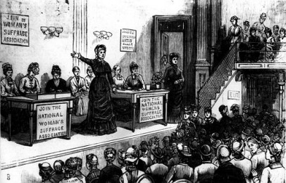

During the antebellum era, the expansion of opportunity was becoming less limited for women, however there were still many things holding them back. Women were primarily held back by wealthy men, who refused to pay them equal to their other male employees some would describe this as even a tyrannical rule. This frustrated many of the women in wage working jobs and resulted in things like the lowell mill strike.
The lowell mill strike was a fairly large strike done by the workers at the lowell mill in 1836, it was not very successful because they owners of the mill simply ignored the workers for the most part and it did not take long before most of them got back to work, they also knew that their positions could be fairly easily filled so they did not try to upset the mill owners anymore. Even though protests like the lowell mill strike of 1836 failed, the majority of women rights activists were not discouraged by this and continued to campaign for their rights, conventions like seneca falls in 1848 had massive influences on the women's rights campaign, it influenced even more women to join the movement.
Another result of the women's rights campaign was women's fertility which dropped sharply, greatly due to the fact that women wanted smaller more manageable families, this is not the norm for the time, most women had many children and spent most if not all of their time taking care of them and the house, with such a drastic change in social view of women it was quite frightening to many men, especially in the south where the idea of a southern lady was very nearly the opposite of what these women wanted to be like. The women's rights movement also branched off of other minority rights movements like the movement to free the slaves or give equality to all men regardless of color. Women would continue to push for their rights, for equal pay, equal social status, and the right to vote being just a few. However it would not be for some time that women finally got their well deserved rights.